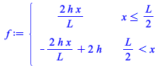
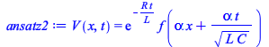
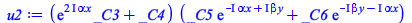

EcDiferencialesParciales.mw
Siete ejemplos y un destino
Luis A. Núñez
Esc. de Física Universidad Industrial de Santander
Bucaramanga Colombia
Mediante 7 ejemplos, inspirados en las recetas Richard H. Enns, 2005, Computer Algebra Recipes for Mathematical Physics, Birkhauser Boston, presentamos estrategias de resolución de ecuaciones diferenciales ordinarias utilizando manipulación simbólica.
Supongamos un muro de adobe que en su cara externa lo calienta el Sol. ¿cómo se puede modelar el calentamiento del Sol?
Ejemplo 1: La ecuación del calor tiene la forma
| > |
EcCalor:=diff(T(x,t),t)-kappa*diff(T(x,t),x,x)=0; |
![Typesetting:-mprintslash([EcCalor := `+`(diff(T(x, t), t), `-`(`*`(kappa, `*`(diff(T(x, t), `$`(x, 2)))))) = 0], [`+`(diff(T(x, t), t), `-`(`*`(kappa, `*`(diff(diff(T(x, t), x), x))))) = 0])](images/EcDiferencialesParciales_1.gif) |
(1) |
donde representa el coeficiente de difusión
La solución de esta ecuación puede ser escrita como
| > |
T(x,t):=T[0]*exp(-a*sqrt(omega/kappa)*x)*cos(omega*t-b*sqrt(omega/kappa)*x); |
![Typesetting:-mprintslash([T(x, t) := `*`(T[0], `*`(exp(`+`(`-`(`*`(a, `*`(`^`(`/`(`*`(omega), `*`(kappa)), `/`(1, 2)), `*`(x)))))), `*`(cos(`+`(`-`(`*`(omega, `*`(t))), `*`(b, `*`(`^`(`/`(`*`(omega), ...](images/EcDiferencialesParciales_3.gif) |
(2) |
Entonces
| > |
ec1:=simplify(EcCalor); |
| > |
collect(ec1,{cos,sin}); |
Necesariamente a = b = 1/sqrt(2)
| > |
aa := evalf(1/sqrt(2)); bb:= aa; |
|
![Typesetting:-mprintslash([bb := .7071067810], [.7071067810])](images/EcDiferencialesParciales_7.gif) |
(5) |
Para calcular el coeficiente de difusion http://en.wikipedia.org/wiki/Thermal_diffusivity
| > |
kappa[arcilla]:=2.7*10^(-7); |
| > |
periodo:=24*60*60; frec:=evalf(2*Pi/periodo); |
|
![Typesetting:-mprintslash([frec := 0.7272205218e-4], [0.7272205218e-4])](images/EcDiferencialesParciales_10.gif) |
(7) |
| > |
T:=eval(T(x,t),{a=aa,b=bb,T[0]=13,kappa=kappa[arcilla],omega=frec}); |
| > |
Temp:=plot(23.0,x=0..0.5,color=blue,linestyle=3): |
| > |
animate(plot,[T+23.,x=0..0.5],t=0..periodo,frames=50, thickness=2,background=Temp); |
¿que pasa si la pared es de madera? kappa= 8.2*10**(-8)
Supongamos un muro de madera que en su cara externa lo calienta el Sol. ¿cómo se puede modelar el calentamiento del Sol?
La ecuación del calor tiene la forma
| > |
EcCalor:=diff(T(x,t),t)-kappa*diff(T(x,t),x,x)=0; |
donde d representa el coeficiente de difusión
La solución de esta ecuación puede ser escrita como
| > |
T(x,t):=T[0]*exp(-a*sqrt(omega/kappa)*x)*cos(omega*t-b*sqrt(omega/kappa)*x); |
Entonces
| > |
ec1:=simplify(EcCalor); |
| > |
collect(ec1,{cos,sin}); |
Necesariamente a = b = 1/sqrt(2)
| > |
aa := evalf(1/sqrt(2)); bb:= aa; |
![Typesetting:-mprintslash([aa := .7071067810], [.7071067810])](images/EcDiferencialesParciales_17.gif) |
|
(13) |
Para calcular el coeficiente de difusion http://en.wikipedia.org/wiki/Thermal_diffusivity
| > |
kappa[madera]:=8.2*10^(-8); |
| > |
periodo:=24*60*60; frec:=evalf(2*Pi/periodo); |
![Typesetting:-mprintslash([periodo := 86400], [86400])](images/EcDiferencialesParciales_20.gif) |
|
(15) |
| > |
T:=eval(T(x,t),{a=aa,b=bb,T[0]=13,kappa=kappa[madera],omega=frec}); |
| > |
Temp:=plot(23.0,x=0..0.5,color=blue,linestyle=3): |
| > |
animate(plot,[T+23.,x=0..0.5],t=0..periodo,frames=50, thickness=2,background=Temp); |
que pasa si pido separación de variables
| > |
restart: with(plots): #assume(v>0,L>=0): |
| > |
ec1:=diff(T(x,t),t)-kappa*diff(T(x,t),x,x)=0; |
| > |
pdsolve(ec1,T(x,t),HINT=XX(x)*TT(t)); |
| > |
pdsolve(ec1,T(x,t),HINT=XX(x)*TT(t),INTEGRATE); |
| > |
pdsolve(ec1,T(x,t),HINT=XX(x)*TT(t),INTEGRATE,build); |
Ejemplo 2: Una cuerda de piano
| > |
restart: with(plots): #assume(v>0,L>=0): |
Otra vez, consideremos una cuerda vibrante de extremos fijos en x= 0 y en x =L. Entonces, una vez mas la ecuación de la oscilación de la cuerda vibrante es
| > |
ec1 :=diff(u(x,t),x,x)=(1/v^2)*diff(u(x,t),t,t); |
Procedemos de la misma forma, mediante el método de separación de variables
| > |
pdsolve(ec1,u(x,t),HINT=X(x)*T(t)); |
Y además le pedimos que la integre
| > |
pdsolve(ec1,u(x,t),HINT=X(x)*T(t),INTEGRATE); |
Nos quedan cuatro constantes que deben ser resueltas de las condiciones iniciales y de las condiciones de frontera. Antes de determinarlas veamos como queda la solución
| > |
sol:=pdsolve(ec1,u(x,t),HINT=X(x)*T(t),INTEGRATE,build); |
empezamos con un cambio de variable de C1 a -k^2
| > |
u:=simplify(subs(_c[1]=-k^2,rhs(sol))) assuming k>0; |
¿cómo se vería la solución completa?
| > |
u2:=expand(convert(u,trig)); |
Si el extremo x=0 está fijo entonces es claro que
| > |
u3:=subs({cos(k*x)=0},u2); |
Imponemos las condiciones de frontera u(x=0,t) = 0 y luego u(x =L,0) = 0 => k=n*Pi/L y luego la velocidad inicial = 0
| > |
u4:=subs({cos(k*x)=0,sin(c*k*t)=0,k=n*Pi/L},u3); |
factorizando
Construimos los términos que se pueden expresar como una serie
| > |
u6:=A[n]*select(has,u5,{sin,cos}); |
Entonces

Entonces vamos a suponer que la forma inicial alguna forma inicial del pulso. Para ello evaluamos para t=0
| > |
f :=piecewise(x<= L/2, 2*h*x/L, x>L/2, -2*h*x/L +2*h); |
Vale decir
Por cierto si queremos hacer que MAPLE nos muestre como luce una ecuación hacemos algo así
| > |
ec20:=Int(f*sin(n*Pi*x/L),x=0..L)=Int(subs(t=0,u6)*sin(n*Pi*x/L),x=0..L); |
con lo cual utilizando la ortogonalidad de las funcinones senos y cosenos
| > |
ec2:=int(f*sin(n*Pi*x/L),x=0..L)=int(subs(t=0,u6)*sin(n*Pi*x/L),x=0..L); |
y despejamos An
| > |
A[n]:=solve(ec2,A[n]) assuming n::integer; |
con lo cual
| > |
animate(value(u7),x=0..L,t=0..160,frames=500,thickness=2,tickmarks=[4,3],scaling = constrained); |
una forma mas general de la posici'on inicial
| > |
fp :=piecewise(x<= L/p, h*x/(L/p), x>L/p, -h*x/(L-(L/p)) +h*L/(L-(L/p))); |
Repetimos los cálculos anteriores a ver cómo queda la función
| > |
u6p:=Ap[n]*select(has,u5,{sin,cos}); |
| > |
ec3:=int(fp*sin(n*Pi*x/L),x=0..L)=int(subs(t=0,u6p)*sin(n*Pi*x/L),x=0..L); |
| > |
Ap[n]:=solve(ec3,Ap[n]) assuming n::integer; |
| > |
animate(value(u7p),x=0..L,t=0..260,frames=500,thickness=2,tickmarks=[4,3],scaling = constrained); |
Si suponemos una forma inicial del pulso mas general, de la siguiente manera
| > |
u6f:=Af[n]*select(has,u5,{sin,cos}); |
| > |
ec4:=int(ff*sin(n*Pi*x/L),x=0..L)=int(subs(t=0,u6f)*sin(n*Pi*x/L),x=0..L); |
| > |
Af[n]:=solve(ec4,Af[n]) assuming n::integer; |
| > |
animate(value(u7f),x=0..L,t=0..260,frames=500,thickness=2,tickmarks=[4,3],scaling = constrained); |
| > |
restart: with(plots): assume(v>0,L>0): |
Ejemplo 3: Esta vez la cuerda (con los extremos fijos en x=0 y x=L) le vamos a imprimir un perfil de velocidades g(x) y una amplitud inicial f(x)
| > |
f(x):=0: g(x):=piecewise(x<L/4,4*v*x/L,x<L/2,(4*v/L)*(L/2-x),x<L,0); |
Notese que se le imprime una velocidad a una parte de la cuerda
| > |
u:=N->Sum(sin(n*Pi*x/L)*(a[n]*cos(n*Pi*c*t/L)+b[n]*sin(n*Pi*c*t/L)),n=1..N); |
En este caso, supondremos que para la parte temporal la expansión en series de Fourier completa incluyendo coeficientes pares e impares. Los cuales son las proyecciones de la función u(x,t) a lo largo de los vectores base. Entonces para t=0 la forma inicial de u(x,0) es
| > |
a[n]:=simplify((2/L)*int(f(x)*sin(n*Pi*x/L),x=0..L)); |
mientras que para un perfil de velocidades para t=0 tendremos que es el coeficiente bn el que interviene ¿por qué?
| > |
b[n]:=simplify((2/(n*Pi*c))*int(g(x)*sin(n*Pi*x/L),x=0..L)); |
Siguiendo el mismo procedimiento uno desarrolla la serie hasta 25 términos
Evaluando las constantes que caracterizan al problema, tendremos
| > |
sol2:=subs({L=20,v=5,c=1},sol): vel:=diff(sol2,t): |
graficamos el perfil de velocidades en t=0
| > |
plot([subs({L=20,v=5,c=1},g(x)),eval(vel,t=0)],x=0..20,color=[blue,red],thickness=2,scaling=constrained,tickmarks=[4,4]); |
| > |
animate(sol2,x=0..20,t=0..50,frames=100,thickness=2,scaling=constrained,tickmarks=[4,3]); |
Como i, la utilizan los ingenieros para indicar intensidad, un imaginario puro lo vamos denotar por j
| > |
interface(imaginaryunit=j): |
Ejemplo 4: La ecuación del Telegrafista
Consideremos al ecuación del Telegrafista (http://en.wikipedia.org/wiki/Telegrapher's_equations). Uno de los casos que esta ecuación describe es el de líneas de trasmisión pero también describe la propagación de un pulso de calor en materiales, cuando se considera una descripción relativista.
Su derivación va más o menos así. Consideremos un voltage variable V(x,t), una inductacia L, una capacitancia C, una resistencia R, y una pérdida G. Entonces, la variación de voltaje en la línea puede ser descrita como:
| > |
eq1:=diff(V(x,t),x)=-R*I(x,t)-L*diff(I(x,t),t); |
Es decir, la caida de voltaje en la línea se debe a dos factores: la resistencia y la inductancia.
Por otro lado, la variación de la intensidad viene dada por:
| > |
eq2:=diff(I(x,t),x)=-G*V(x,t)-C*diff(V(x,t),t); |
Derivando esas ecuaciones, respecto a x y respecto a t respectivamente, tendremos
| > |
eq3:=diff(eq1,x); eq4:=diff(eq2,t); |
Estamos buscando una ecuación diferencial para V(x,t), por lo tanto debemos eliminar I(x,t), para ello lo despejamos de la ecuación (7) y (8b) para sustituirlos en la ecuación (8a).
| > |
eq5:=subs({eq2,eq4},eq3); |
Acomodando un poco, tenemos la ecuación del telegrafista.
| > |
TE:=collect(eq5,diff(V(x,t),t)); |
Es claro que si no hay resistencias ni pérdidas, el voltage cumple con una ecuación de onda, en la cual el voltage se propaga con una velocidad
| > |
WE:=eval(TE,{R=0,G=0}); |
y, curiosamente, si no existe inductancia ni pérdida, lo que obtenemos es la ecuación de difusión con un coeficiente de difusión
| > |
DE:=eval(TE,{L=0,G=0}); |
Procedemos igual que en el primer caso, vamos a intuir una solución y la ajustamos (mediante unas variables) al problema. Es decir a las condiciones de borde e iniciales.
| > |
ansatz:=V(x,t)=exp(-k*t)*f(alpha*x+beta*t); |
Ajustaremos tres constantes arbitrarias: k, , y .
Esta estrategia de uso de la intuición puede apoyarse en la capacidad de MAPLE para probar si una función es o no solución para una determinada ecuación.
| > |
eq6:=pdetest(ansatz,TE); |
por inspecci'on si hacemos una elección inteligente de las constantes, entonces podemos simplificar apreciablemente esta ecuación.
Si
| > |
beta:=alpha/sqrt(L*C): G:=R*C/L: k:=R/L: ansatz2:=ansatz; |
Note que solo nos queda una constante arbitraria. Procedemos entonces a probar si V(x,t) es solución, o mejor, qué necesitamos para que esa forma funcional de V(x,t) sea solución.
¡ bingo ! Tenemos solución de la ecuación del telegrafista, una ecuación diferencial, lineal, de segundo orden que describe las variaciones de voltage a lo largo de una línea de trasmisión
Ejemplo 5: Volvamos a la ecuación de difusión para una barra de longitud L=3 y coeficiente de difusión d=2. El sistema se mantiene a temperatura constante (0 grados) en sus extremos y se le aplica perfil de temperatura inicial T(x,0)= g(x).
| > |
restart: with(plots): d:=2: L:=3: |
| > |
pde:=diff(T(x,t),t)=d*diff(T(x,t),x,x); |
Igual que antes, para la cuerda vibrante, resolvámosla por separación de variables
| > |
sol:=pdsolve(pde,HINT=X(x)*Y(t),INTEGRATE,build); |
De un solo envión, le hemos propuesto a MAPLE una solución por separación, le pedimos que la integre y, que finalmente nos la presente la solución armada.
Sin perder generalidad, podemos imponer particularizamos algunas de las constantes:
| > |
T:=subs({_C3=1,_C1=A,_C2=B,_c[1]=-k^2},rhs(sol)); |
Hemos impuesto C3=1 y renombramos C1 y C2, como A y B respectivamente. Además hemos rebautizado
Acomodando un poco más
| > |
T2:=simplify(T,symbolic); |
Si queremos satisfacer las condiciones de frontera, entonces T(0,t) = 0, entonces B= -A, con lo cual
| > |
T3:=evalc(subs(B=-A,T2)); |
Tal y como dijimos, en el otro extremo también lo conservamos a 0 grados. Entonces
| > |
k:=m*Pi/L: T4:=subs(A=1/(2*I),T3); |
La solución general tendrá la forma
En general, para un perfil genérico de temperatura inicila, T(x,0)=g(x) , tendremos que calcular los coeficientes como lo hicimos en el caso de la cuerda vibrante. Es decir, a partir de la proyección del perfil a lo largo de las funciones base. Esto es
Si suponemos un perfil inicial de temperatura
| > |
T5:=5*eval(T4,m=12)-3*eval(T4,m=24)+2*eval(T4,m=30); |
| > |
animate(T5,x=0..L,t=0..0.025,frames=100,numpoints=500,thickness=2,labels=["x","T"]); |
Claramente, como conservamos los extremos a 0 grados, vamos enfriando la barra, hasta que alcanza la temperatura de los extremos.
Consideremos ahora un perfil diferente. Supongamos que la barra inicialmente se encuentra a 25 grados, entonces g(x) = 25 y los coeficientes serán
| > |
C[m]:=(2/L)*Int(25*sin(m*Pi*x/L),x=0..L); |
Integrando
| > |
C[m]:=(2/L)*int(25*sin(m*Pi*x/L),x=0..L) assuming m::integer; |
con lo cual la temperatura será descrita por la serie infinita (infinita hasta el témino m=20 :-) )
| > |
Temp:=Sum(C[m]*T4,m=1..20); |
evaluándola
y mirándola
| > |
animate(Temp,x=0..L,t=0..2,frames=50,thickness=2,numpoints=500,labels=["x","T"]); |
Miren que pasa cuando aumento los términos de la expansión de Fourier m=50
| > |
Temp:=Sum(C[m]*T4,m=1..50);Temp:=value(Temp):animate(Temp,x=0..L,t=0..2,frames=100,thickness=2,numpoints=500,labels=["x","T"]); |
o m = 100
| > |
Temp:=Sum(C[m]*T4,m=1..100);Temp:=value(Temp):animate(Temp,x=0..L,t=0..2,frames=200,thickness=2,numpoints=500,labels=["x","T"]); |
Obsérvese el fenómeno de Gibbs en los extremos.
¿Que pasaría le damos un pulso de calor en algún segmento de la barra ?
Para ello utilizaremos la distribución de Heaviside,
| > |
Heaviside(x -L/LL);plot(%,x=0..L);Heaviside(x -(L/LL+d));plot(%,x=0..L); |
| > |
Heaviside(x -L/LL)-Heaviside(x -(L/LL+d));plot(%,x=0..L); |
| > |
g(x):= 25*(Heaviside(x -L/LL)-Heaviside(x -(L/LL+d)));plot(%,x=0..L); |
Los nuevos coeficientes serán
| > |
C[m]:=(2/L)*Int(g(x)*sin(m*Pi*x/L),x=0..L); |
integrando
| > |
C[m]:=(2/L)*int(g(x)*sin(m*Pi*x/L),x=0..L) assuming m::integer; |
![Typesetting:-mprintslash([C[m] := `+`(`/`(`*`(50, `*`(cos(`+`(`*`(`/`(1, 4), `*`(m, `*`(Pi))))))), `*`(m, `*`(Pi))), `-`(`/`(`*`(50, `*`(cos(`+`(`*`(`/`(7, 12), `*`(m, `*`(Pi))))))), `*`(m, `*`(Pi))))...](images/EcDiferencialesParciales_144.gif) |
(77) |
con lo cual la temperatura será descrita por la serie infinita (infinita hasta el témino m=20 :-) )
| > |
Temp:=Sum(C[m]*T4,m=1..40); |
evaluándola
y mirándola
| > |
animate(Temp,x=0..L,t=0..2,frames=50,thickness=2,numpoints=500,labels=["x","T"]); |
Supongamos ahora que calentamos puntualmente el medio de la barra. Para ello utilizamos la distribución delta de Dirac. Igual que siempre calculamos los coeficientes
| > |
g(x):=Dirac(x-L/2); C[m]:=(2/L)*Int(g(x)*sin(m*Pi*x/L),x=0..L); |
![Typesetting:-mprintslash([g(x) := Dirac(`+`(x, `-`(`/`(3, 2))))], [Dirac(`+`(x, `-`(`/`(3, 2))))])](images/EcDiferencialesParciales_158.gif) |
|  |
(80) |
| > |
C[m]:=(2/L)*int(g(x)*sin(m*Pi*x/L),x=0..L) assuming m::integer; |
| > |
Temp:=Sum(C[m]*T4,m=1..50); |
 |
(82) |
| > |
animate(Temp,x=0..L,t=0..2,frames=100,thickness=2,numpoints=500,labels=["x","T"]); |
Ejemplo 6: Ahora vamos a considerar el caso bidimensional.
El problema será calcular el potencial (¿eléctrico?) en una región (x ≥ 0, 0 ≤ y ≤ a) sin cargas eléctricas, con las siguientes condiciones de frontera
*) V(0,y)=V0
*) V(x,0)= 0 y V(x,a)=0
La ecuación de Laplace es
| > |
pde:=diff(V(x,y),x,x)+diff(V(x,y),y,y)=0; |
![Typesetting:-mprintslash([pde := `+`(diff(V(x, y), `$`(x, 2)), diff(V(x, y), `$`(y, 2))) = 0], [`+`(diff(diff(V(x, y), x), x), diff(diff(V(x, y), y), y)) = 0])](images/EcDiferencialesParciales_169.gif) |
(84) |
Iguale que los casos anteriores, le pedimos a MAPLE todo
| > |
sol:=pdsolve(pde,HINT=X(x)*Y(y),INTEGRATE,build); |
![Typesetting:-mprintslash([sol := V(x, y) = `+`(`*`(_C3, `*`(sin(`*`(`^`(_c[1], `/`(1, 2)), `*`(y))), `*`(_C1, `*`(exp(`*`(`^`(_c[1], `/`(1, 2)), `*`(x))))))), `/`(`*`(_C3, `*`(sin(`*`(`^`(_c[1], `/`(1...](images/EcDiferencialesParciales_170.gif) |
(85) |
Como siempre (ya ahora más) nos sobran varias constantes que debemos ajustar con las condiciones de frontera. Otra vez, renombramos la constante ![_c[1]](images/EcDiferencialesParciales_171.gif)
| > |
sol:=simplify(subs(sqrt(_c[1])=k,rhs(sol))); |
si tenemos V(x,0)= 0 tenemos que anular los términos
| > |
sol2:=subs({cos(k*y)=0,exp(2*k*x)=0,k=n*Pi/a},sol); |
Acomodando
| > |
sol3:=A*sin(n*Pi*y/a)*exp(-n*Pi*x/a); |
![Typesetting:-mprintslash([sol3 := `*`(A, `*`(sin(`/`(`*`(n, `*`(Pi, `*`(y))), `*`(a))), `*`(exp(`+`(`-`(`/`(`*`(n, `*`(Pi, `*`(x))), `*`(a))))))))], [`*`(A, `*`(sin(`/`(`*`(n, `*`(Pi, `*`(y))), `*`(a)...](images/EcDiferencialesParciales_175.gif) |
(88) |
Los coeficientes se pueden calcular haciendo x=0 y utilizando la ortogonalidad de las funciones seno
| > |
A:=(2/a)*int(V0*sin(n*Pi*y/a),y=0..a) assuming n::integer; |
![Typesetting:-mprintslash([A := `+`(`-`(`/`(`*`(2, `*`(V0, `*`(`+`(`^`(-1, n), `-`(1))))), `*`(Pi, `*`(n)))))], [`+`(`-`(`/`(`*`(2, `*`(V0, `*`(`+`(`^`(-1, n), `-`(1))))), `*`(Pi, `*`(n)))))])](images/EcDiferencialesParciales_176.gif) |
(89) |
y la serie la cortamos (modestamente) en 100 términos
| > |
a:=1: V0:=2: V:=sum(sol3,n=1..100); |
graficando, obtendremos
| > |
contourplot(V,x=0..2,y=0..a,contours=[seq(i*V0/10,i=1..9)],thickness=2,grid=[50,50]); |
si hacemos un gráfico tridimensional
| > |
contourplot3d(V,x=0..1,y=0..a,contours=[seq(i*V0/10,i=1..9)],grid=[60,60],shading=zhue,filled=true,axes=boxed,tickmarks=[2,2,2]); |
Ejemplo 7: ¿Una cama elástica?
| > |
restart: with(plots): F:=v->diff(u(x,y,t),v,v): |
| > |
pde:=F(x)+F(y)=F(t)/c^2; |
![Typesetting:-mprintslash([pde := `+`(diff(u(x, y, t), `$`(x, 2)), diff(u(x, y, t), `$`(y, 2))) = `/`(`*`(diff(u(x, y, t), `$`(t, 2))), `*`(`^`(c, 2)))], [`+`(diff(diff(u(x, y, t), x), x), diff(diff(u(...](images/EcDiferencialesParciales_188.gif) |
(91) |
Como se puede apreciar esta ecuación depende de dos variables espaciales y un temporal.
Al igual que en los casos anteriores, le pedimos a MAPLE que la resuelva
| > |
sol:=pdsolve(pde,HINT=X(x)*Y(y)*T(t),INTEGRATE,build); |
![Typesetting:-mprintslash([sol := u(x, y, t) = `+`(`*`(exp(`*`(`^`(_c[2], `/`(1, 2)), `*`(y))), `*`(exp(`*`(`^`(_c[1], `/`(1, 2)), `*`(x))), `*`(_C5, `*`(_C3, `*`(_C1, `*`(sin(`*`(c, `*`(`^`(`+`(`-`(_c...](images/EcDiferencialesParciales_189.gif)
|
(92) |
suplicamos una simplificación
| > |
u1:=simplify(subs({_c[1]=-alpha^2,_c[2]=-beta^2},rhs(sol)),symbolic); |
y algo ganamos.
Como la velocidad inicial es cero tenemos que eliminar los términos en seno
| > |
u2:=remove(has,u1,sin); |
| > |
u2 := (exp((2*I)*alpha*x)*_C3+_C4)*(cos(c*sqrt(alpha^2+beta^2)*t)*_C2)*(_C5*exp(-I*alpha*x+I*beta*y)+_C6*exp(-I*beta*y-I*alpha*x)) |
covertimos en funciones trigonométrica a ver si se ve mejor
| > |
u3:=expand(convert(u2,trig)); |
Imponemos las condiciones de frontera en la cual los extremos están fijos. Para ello u(0,y,t)=u(x,0,t)=0
Entonces 
| > |
u4:=factor(subs({cos(beta*y)=0,cos(alpha*x)=0,alpha=m*Pi/b,beta=n*Pi/b},u3)); |
 |
(97) |
| > |
u5:=B[m,n]*select(has,u4,{sin,cos}); |
Si la deformación inicial de la superficie se modela como
| > |
f:=A*x^2*y*(b-x)*(b-y)^3; |
los coeficientes se calculan a partir de las relaciones de ortogonalidad.
| > |
B[m,n]:=(2/b)^2*int(int(f*sin(m*Pi*x/b)*sin(n*Pi*y/b),x=0..b),y=0..b) assuming m::integer,n::integer; |
y se procede con una doble sumatoria
| > |
Sum(Sum(u5,m=1..N),n=1..N); |
Con lo cual se construye la función solución como
| > |
G:=N->sum(sum(u5,m=1..N),n=1..N); |
y hacemos la suma hasta 10 términos
| > |
A:=1/5: b:=2: c:=1: N:=10: u:=G(N); |
| > |
animate(plot3d,[u,x=0..b,y=0..b],t=0..50,frames=500,axes=boxed,shading=zhue,tickmarks=[3,3,3]); |